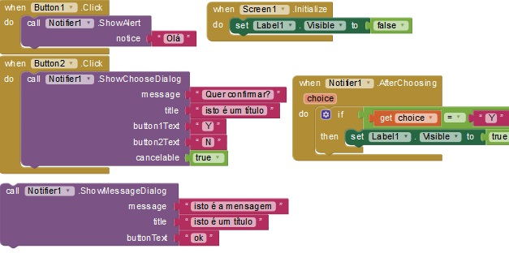

Acessando o site
https://appinventor.mit.edu/
Acesse o site acima e clique no botão Create Apps. É bom antes já está logado numa conta google (Ex: meuemail@gmail.com)
App Inventor
Interação com usuário
Notificações (Tipos)
Equivale a mensagem via popup de navegador. Pode ser simples mensagem de informação (ShowAlert) bem como a que retorna janela com sim/não.

\n serve pra quebrar linha num texto
Animação
Quadrado (virtual)
Movendo Horizontalmente Controlado por Slider (by Joe) Note que square é o quadrado mas aonde posX foi retirado da var local para uma global para ser acessada por thumbPosition.
Áudio & Vídeo
Explosion (Áudio) https://youtu.be/3eHQsATBhcI
Radio de 4 botões ("Placa de som")
https://youtu.be/lbJTlrf5KLE
Pause
https://youtu.be/DKl6xGY1yF4
Vídeo
CKT1 - semelhante ao já apresentado lá na seção banco de dados, porém não usa TinyDB e, o bloco .Completed pode ser retirado caso queira que ao terminar de tocar o vídeo não inicie outro. Apresentou instabilidade de forma que toca uns 5 videos e depois para, sendo preciso clicar novamente em Atualizar (btPlay).
CKT2
Clock1.Timer Se true toca eternamente ao clicar btPlay.
call VideoPlayer1.Start Se náo estiver em Clock1.Timer e sim em btPlay.Click o ckt é nulo.
Desenho
Pen & Eraser (DrawLine) Soft simples e fácil de desenha/apaga
https://youtu.be/LuM4rp5cZp0
How to use Canvas, Dragged, and Touch - parce fazer linha reta
https://youtu.be/4AUi3A2kVaU
Canvas Picture Drawing
https://youtu.be/etwnsayHdB8
Canvas Picture Drawing (pt1)
https://youtu.be/4WHdr4kBDYY
draw an arc (DrawPoint)
https://youtu.be/p7qsi5Wh1qg
Drawing Shapes
https://youtu.be/qVsVdQQJXvY
How To Change Line Width / Size
https://youtu.be/CnjoMxQgnAk
How To Make A Drawing
https://youtu.be/uzzqfi5dPDE
https://youtu.be/mwXidmTDAfs
Distância
Distance http://www.appinventor.org/assets/img/location/distance.png
Distância Terra
http://kio4.com/appinventori/15D_procedures.htm
WebViewer
Random HTML Também ler .txt.
Url pode ser colocado a URL diretamente (file:///mn...index.html)
https://www.youtube.com/watch?v=oCE1VZ2LJqk
Development Use true ou false conforme o momento de desenvolvimento do app ou a construção.
URL para AI Companion: file:///mnt/sdcard/AppInventor/assets/
URL ao compilar: file:///android_asset/webviewstring.html
WebView Var development: true ao desenvolver; comutar false ao construir o app.
if: seleciona uma das duas URLs.
Var HtmlP: contém o meuarquivo.html, o qual será concatenado como uma das URLs.
file:///mnt/sdcard/AppInventor/assets/
file:///android_asset/
Planets by Joe. Mostra os planetas em proporções. Pelo botão deslizante é possível regular os tamanhos.
Botões: são usados para os planetas e o Sol, estes ficando dentro de um arranjo horizontal com Scroll enquanto o Slider1 fica do lado de fora. Pode-se criar também variáveis sendo uma pra cada planeta e atribuir a cada uma sua proporção em relação ao tamanho da Terra. Isso depois facilitará na hora de fazer as multiplicações.
Presets de sites Um "Navegador". A caixa de texto podemos escrever uma url e ao clicar Go faz-se o link. Já btCh1 é um preset com endereço de site.
Outros
Enviar texto pra lista de telefones https://youtu.be/KES6Ta3N1gU
Login - Grava no celular TDB
https://youtu.be/r9zJaWUwhtE
Menu Lateral com Slider
https://www.youtube.com/watch?v=KNjJflvhz68
Monetizar
https://youtu.be/1M_0jzHej1o
Drawing 2D shapes
https://youtu.be/UcjmB_urZQ8
Draw and Paint
https://youtu.be/WYMPa5jXeDM
How to Drive in a Square
https://youtu.be/a6uQ7uGVuiw
Verifica Senha
https://youtu.be/zIAgWK5nldg
Testa Campo
https://youtu.be/n0MCItgeQkE
Agendamento (Firebase)
https://www.youtube.com/watch?v=A6X6wPDctfk
https://www.youtube.com/watch?v=Re4NGUYQ1j0
BarGraphic Uso de um slider e um botão.
Bluetooth Vide App Inventor "Bluetooth" para ckt
https://www.youtube.com/watch?v=gfOaMKVdj8I
Ethernet Vide App Inventor "Ethernet" para ckt
https://www.youtube.com/watch?v=eBhyOVboKRo
accelerometer Não testado!
https://www.youtube.com/watch?v=iVcM6sTLnNU
ContagemRegressivaDisparaSom Isso com false. Se false for trocado para true ele vai tocar mais de uma vez.
https://www.youtube.com/watch?v=95CZHshnsMg
Cadastrar contato (no servidor MySQL; a_Agenda_PhpMyAdmin) Componente Web (menu esquerdo Connectivity) . PHP + MySql + AI. WampServer
o codigo em si eh a parte do set Web_Cadastro. O trecho if do video é mero tratamento para nomes n estarem vazios
join: http://192.168.1.100/agenda/gravar.php?nome=
como enviar dados pro banco de dados MySQL atraves do AI.
n eh diretamente. passa pelo php, depois q vai passar pro mySQL
https://youtu.be/kyXbH6Ik-4I
cookies
https://www.youtube.com/watch?v=b-3FnNPJFmg
Adiciona Itens e mostra
https://youtu.be/7eb6xy_nUBk
File b (ActivityStarter) (Memória, Armazenamento )
https://www.youtube.com/watch?v=0nW2RXZq93w
axu q esse ckt n funciona pq
precisa ser instalado no cel, jah q ha diretorios.
Selecionar Arquivo (botão) Abre o "HD" do dispositivo e permite escolher um arquivo.txt para abrir.
btMostrar (botão). Mostra o conteúdo do arquivo escolhido.
btSave (botão). Ao editar o conteúdo aberto pode-se salvar.
Action: android.intent.action.PICK
DataType: vnd.android.cursor.dir/lysesoft.andexplorer.file
DataUrl:
file:///mnt/sdcard/
19: acho que é soma das letras de DataUrl
Salva arquivo na memoria do cel
https://www.youtube.com/watch?v=uMzLQo1R8FA
Append adiciona o texto ao final do arquivo.
Clique no Append e reabrar o arquivo
GPS_E_GoogleMaps
https://www.youtube.com/watch?v=nDUpOxnZfsk
IMG - Vide "IMG" no App Inventor.
https://www.youtube.com/watch?v=rAgllUjT6FE&t=98s
Img_DesenharCores
https://www.youtube.com/watch?v=K6V9XKbkcMA
ImgRndWeb - Vide no App Inventor.
https://www.youtube.com/watch?v=C8vDEio1oPA
Random Img.
https://www.youtube.com/watch?v=oPh_KEYEXmk&t=138s
WV_Js_FullScreen
GoToUrl: file:///mnt/sdcard/AppInventor/assets/js_fullscreen_d.html
File: file:///android_asset/joesk.html
https://www.youtube.com/watch?v=oCE1VZ2LJqk
VdAutoB (vídeo) Escolhe sorteadamente um da lista e toca. Não toca outro.
Interval: é um ofset, demora. Interval de 222ms toca loopado
true, false:
inicia mp4 tocando e depois para. ou seja, toca 1 vez.
false, true:
inicia mp4 parado. fundo preto no tamanho determinado.
true, true: inicia tocando e repete com o intervalo. Ou seja, toca varias vezes.
CKT 2 - pelo ckt parece q uma vez terminado o primeiro entraria no segundo, mas n entra.
CKT 3 - bt Start e Pause
CKT 4 - VdPlayNextPrev
Buscar Video
https://youtu.be/hmIxwC3qir0
Escolhe vídeo do "HD" e abre (ActivityStarter). É possivel tocar bem com fullscreeen.
ActivitySatar ha configuracoes em Action e DataType
https://www.youtube.com/watch?v=XBOUSL3Hqsg&t=472s

Seleciona radio pelo IP da radio (SndRadioOnline)
https://www.youtube.com/watch?v=kiabjruULlc
www.planetaxat.com/radio/
TextBox pode ter uma string com o IP escrito direto
Player1.Source: http://51.254.130.212:8000
pedometer Vide App Inventor. Parece q está em alemão. Tem q entender e pôr em português ou inglês.
https://www.youtube.com/watch?v=1A9xevh6M1k
Menu Telas
Img Rotate Pode-se tentar controlar a velocidade com um slider.
Fractal
ft: app inventor gallery
Components: Canvas (width e height = fill parent); Horizontal Arrangement (com 3 botões)
Pong
Publicar na Google Play
https://www.youtube.com/watch?v=Y6noxzxsoLs
Outras tecnologias
appinventor, app.thunkable.org, listas // https://youtu.be/UPoj6_uU7qs
studio.code.org // https://youtu.be/wIf8kbZ3T6c appinventor X kodular (c.kodular.io) X thunkable: plataformas para criar aplicativos// https://youtu.be/qQtb7SzGEjg microbit.org //https://www.youtube.com/watch?v=Ekg9AOsUH4k&index=3&list=PLW4TiNoiDJKKSpsn-UlbkqFNvRGcrRgvg
Permissões em apps
As chamadas permissões têm relações com a nossa segurança.
Cada uma nos informa do que será utilizado do nosso celular pelo soft que estamos instalando. Se instalamos uma câmera fotográfica então ele pedirá acesso ao dispositivo de câmera, bem como fotos e mémoria (para poder salvar as fotos que o usuário tirar). Se a câmera também grava vídeo então será necessário acesso ao microfone, afinal, um vídeo sem som é bem incomum.
Entretanto muitos apps pedem coisas desnecessárias, como registros de ligações ou autorização para saber a posição geográfica do usuário; bem como PII, termo de segurança da informação e que se refere às informações de identificação pessoal.
O fato √© que os dados do usuário podem dizer o perfil de consumo dele e isso tem valor de mercado. Um fabricante pode fazer uma aplicação simples, como um editor de texto, soft de desenho ou aquela m√°quina fofogr√°fica e com isso, quando o instalamos, automaticamente o desenvolvedor tem acesso a muitas informações de interesse.
Na prática...
Aqui dois aplicativos como exemplo.

O app de laterna, claro, precisa de uma permissão para lidar com a luz de flash da câmera; porém ele pede coisas que não tem nada a ver com isso, como é o caso da localização.
Já o programa da série i-Kids (i-Tech, iP...) é desenvolvido no intuito de ajudar na educação e formação, não tendo interesse em coletar dados pessoais, motivo pelo qual não “se pede” permissões desnecessárias como a localização do usuário, etc.
Portanto devemos ser espertos durante uma instalação e lermos o que diz as permissões. Simples!
Saiba mais sobre apps para Android em Instalando Apk.
Instalando apk
O sistema operacional Android é um produto da Google, assim a corporação deseja que instalemos aplicativos somente de seu outro produto, a loja Play Store (Google Play).
Ajustando a configuração do seu sistema operacional Android pode-se instalar softs de fontes diferentes da Google Play.
Acesse as opções de segurança
Ícone ajustes Icone com a engrenagem.
Menu Geral, opção Segurança Ícone com cadeado. "Fontes Desconhecidas". Há um pequeno texto tal como "Permita a instalação de aplicativos...".
Confirme no quadrado de check Agora seu celular Android permite a instalação de arquivos baixados por fontes que não são da Google/Play Store.
Copie o Arquivo
A partir do seu PC, copie o arquivo apk para seu dispositivo Android (o celular, tablet)
Exemplo: instalando iKids.apk
- Transfira o arquivo iKids.apk para seu dispositivo Android; por exemplo, para a pasta Download.
- Acesse em seu dispositivo Android o local (a tal pasta) do arquivo iKids.apk.
- Clique em iKids.apk e instalar.
Habilitar a instalação de fontes desconhecidas pode ser necessário.
Saiba mais sobre apps para Android em Permissões em Apps.